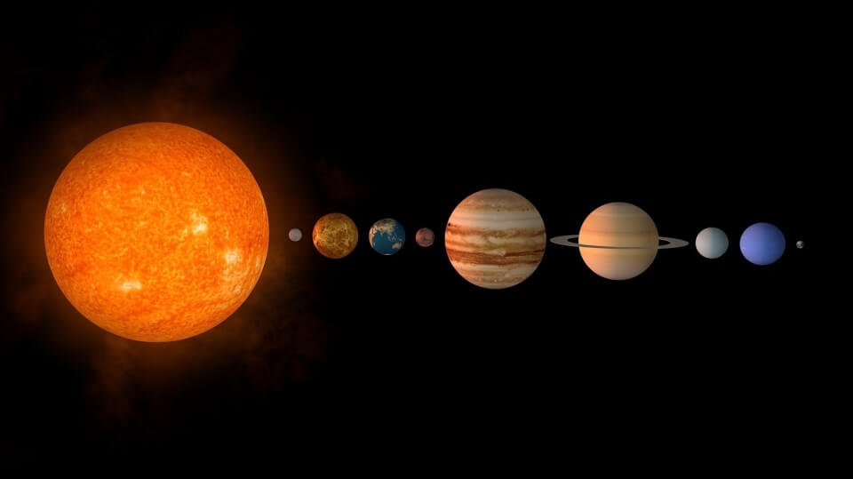

Sluneční soustava
- soubor těles obíhajících kolem Slunce, které je jejím středem
- Slunce tvoří více než 99 % hmotnosti celé soustavy
- gravitační silou udržuje u sebe planety, měsíce, planetky, komety i prach
- sluneční záření ovlivňuje podmínky na všech tělesech a umožňuje existenci života na Zemi
- sahá mnohem dál než k Neptunu – až do oblasti tzv. Oortova oblaku
- do Sluneční soustavy patří:
